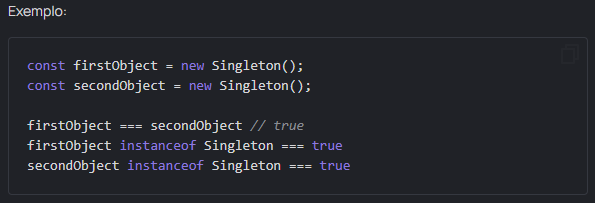
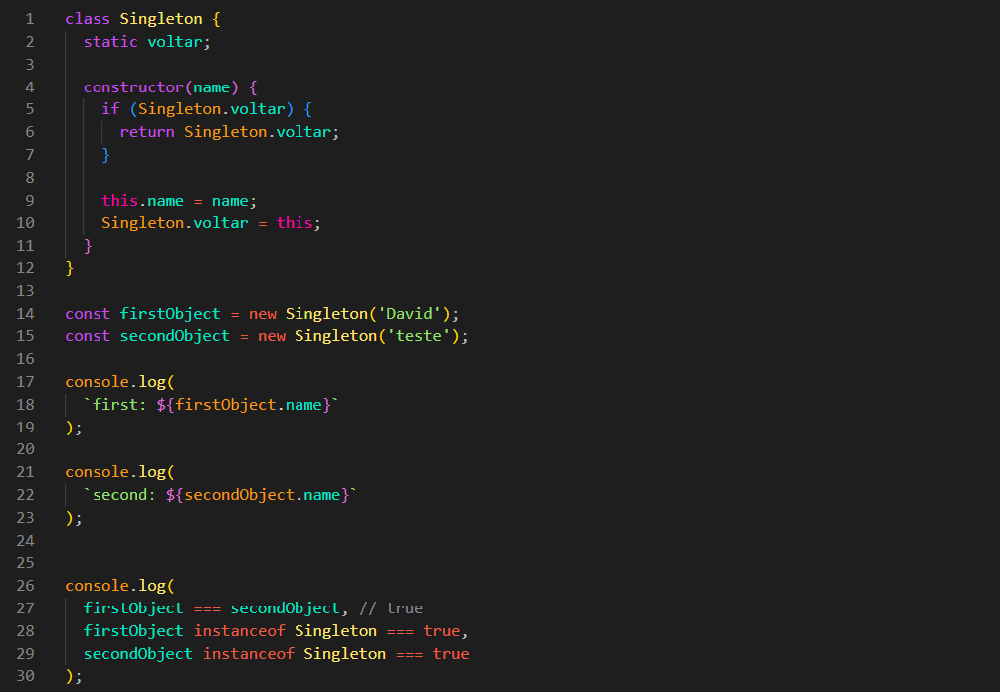

Singleton pattern
O padrão Singleton é um dos padrões mais famosos da programação. Alguns até o chamariam de antipadrão, mas vale a pena conhecer os detalhes de sua implementação para entender melhor o tema herança e classes.
Crie uma classe Singleton, cujo construtor deve sempre retornar uma referência à primeira instância criada.

Resultado:
